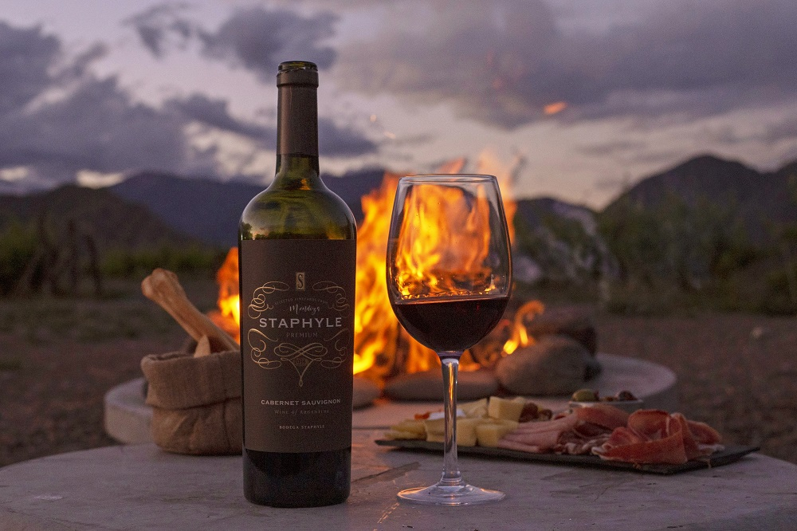

¿Que es el turismo Enologico?
Enoturismo es aquel tipo de turismo que comprende actividades relacionadas con el vino y su cultura, acercando al turista a las zonas de producción. Hay numerosas rutas del vino alrededor del mundo y en todas ellas la propuesta es viajar a una zona vitivinícola para conocer desde adentro la historia de esta bebida, las bodegas, los viñedos y su proceso de elaboración. Si bien el interés principal de estos viajes es el vino, estas propuestas suelen ir de la mano de la gastronomía, la cultura y el amor por los entornos naturales.
Norte
Cafayate (Salta) es una de las zonas vitivinícolas por excelencia del norte de Argentina y su producto regional más famoso es su delicioso vino torrontés. La adversidad de la región, las altitudes de más de 1.700 metros sobre el nivel del mar, los suelos arenosos y el clima dual con pocas precipitaciones hacen que el cultivo de vides en el noroeste argentino sea tan particular. Hay numerosas excursiones que parten desde Salta capital y que te llevan a conocer las bodegas de la zona. En todas ellas es posible aprender acerca del proceso de fabricación casi artesanal de estos vinos, además de degustar algunas variedades y probar el queso de cabra, que es un producto típico de la región. En estas excursiones se visitan además lugares típicos como la Quebrada de las Conchas y sus joyas naturales como la Garganta del Diablo y el Anfiteatro
Cuyo
Mendoza se encuentra en la región de Cuyo, que viene marcando tendencia con “las rutas del vino” y es pionera debido a las características especiales del suelo, clima y amplitud térmica que se requieren para la producción de esta bebida. En sus más de 160.000 hectáreas de viñedos cultivados se producen vinos jóvenes y frutales de característicos sabores y concentración de frutas y aromas. No por nada se la considera una de las grandes capitales mundiales del vino. Luján de Cuyo, Maipú y Godoy Cruz son algunas de las ciudades que concentran las mejores bodegas de la provincia. Las montañas y los bellos paisajes de esta región seducen tanto a turistas nacionales como extranjeros, quienes visitan esta zona para experimentar los característicos sabores y aromas de estos vinos de altura.
Patagonia
La Ruta del Vino de la Patagonia recorre Neuquén, Río Negro y el sur de La Pampa, concentrándose principalmente en las ciudades de Cipolleti y General Roca en el Alto Valle rionegrino. Como en la zona de Cuyo de la Argentina, la Patagonia también es zona de tradición vitivinícola. Nos encontraremos con los famosos vinos de las zonas frías, cuyas particularidades están dadas por las tierras fértiles y el clima en el que se cultivan. Dentro de esta región se destaca la provincia de Río Negro, dueña de las bodegas pioneras de la Patagonia. Desde hace algunos años, la Ruta del Vino de Río Negro propone caminatas por los viñedos, visitas a las zonas productivas de frutales para conocer la historia de los primeros inmigrantes y excursiones a diferentes bodegas. Las propuestas de enoturismo se complementan con las de ecoturismo, avistaje de aves y turismo paleontológico.
Bodegas que no te podes perder
Te mostramos las bodegas que tenes que visitar si o si


Subscribite y forma parte del viaje.
Recibi nuestras recomendaciones mensualmente llenando el formulario